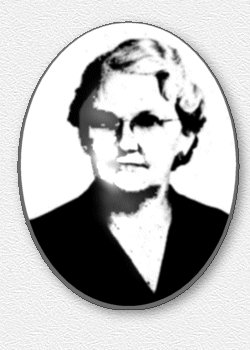

|
|
||||
IDA ELLA PEGRAM SIMMONS
1885 - 1981
A Tribute to his mother written by
Dr. Samuel W. Simmons

IDA ELLA PEGRAM was the youngest daughter of Samuel William Pegram and Martha Jane Taylor. She was born in Falkner, Mississippi, 3 September 1885. When she was three years of age her family moved to Ripley, Mississippi, about seven miles south of Falkner, and the county seat of Tippah County. Her father opened a general mercantile business when he moved to Ripley. The family lived on Jackson Street, across and just north of the Cole-Thurmond-Cox house, and next door to the Simon Finger home. Ida lived there until she was nine years of age, when her family moved to the Hindman place, one mile east of town.
She attended school in Ripley, but sometime after the family moved to the farm she attended school at Park's Chapel. This was because of a teacher, Mrs. Lizzie Hunt, wife of Dr. E. N. Hunt, whom her father thought was an excellent teacher. My mother next went to the Dumas Institute, at the time one of the best schools in the area. This was about the time that it was headed by Professor L. H. Jobe and R. M. Adams, later a Ripley physician. A number of students lived too far away to commute over the unimproved dirt roads, and boarded at Dumas, as was the case with my mother. She boarded at the home of Dr. Will Murry, a physician. He had a daughter, Patty Etta, with whom my mother roomed. Patty Etta later married Dr. Adams, who had taught at the Dumas school. He practiced medicine in Ripley until he died.
While my mother was at Dumas she became ill during an epidemic of typhoid fever, called slow fever at the time, probably because it lasted so long. The principal treatment was to starve the patient, and treat them symptomatically, in an effort to give them some relief. Actually there was not much that was known to do, and the disease was often fatal, no doubt assisted by starvation. My mother was in bed for weeks and almost succumbed. She no doubt would have had my grandmother not taken matters into her own hands and given her some food.
After Dumas my mother went to school at Chalybeate, Mississippi, formerly the Chalybeate Springs Institute. This was about 20 miles north of her home, near the Tennessee border. She was probably about 17 at the time. The railroad from Ripley ran through Walnut, which was two miles west of Chalybeate, with Muddy Bottom in between. At least most of the distance from Ripley could be traveled by rail. While at Chalybeate my mother boarded with a local family. The school was a private institution, owned and operated by the McKinstry family, and a number of them taught there. There was a great demand for graduates of the Chalybeate school. By 1896 the school was furnishing 80 percent of all of the public school teachers in Tippah County. This was understandable from the curriculum. Some of the courses listed in the 1897 catalogue were: trigonometry, calculus, Horace, Levy, algebra, English, history, Mississippi history, mental philosophy, beginning Greek, Homer, mental arithmetic, higher arithmetic, parliamentary law, debating, physics, science, and normal methods of teaching. Complete courses were also offered in business, classics, music and art.
About 25 years after my mother was in school at Chalybeate I graduated from the same institution, which had become a county school. Four days prior to my mother's death, at which time she was critically ill, there was a reunion at the Chalybeate School, 29 May 1981. Because of my mother's illness I was in Memphis at the time, and drove to Chalybeate with my sister, Natha, and a friend. There were only three there from the Class of 1927, when Lois, my wife, and I graduated. I do not recall the earliest year represented, but if my mother had been there she would easily have been the earliest student. I only wish that she could have been able to attend.
My mother studied music for a number of years. She had music at Ripley, and when she went to Dumas she continued, and played the guitar as well as the piano, which was her main instrument. At Chalybeate she continued music and the piano under Miss Bess Ray. After Chalybeate she returned to Ripley and studied music under Miss Emma Norris. I recall her playing the piano when I was small, and she would often sing a popular piece of that time. Her father obtained a grand concert piano, and gave this to my mother in about 1922. It was lost when our home burned in 1925. My grandmother's sister, mother's aunt Fannie (Sarah Frances), from west of Blue Mountain, Mississippi, would sometimes visit with them in Ripley. My mother went home with them in Ripley. My mother went home with her for a visit sometime in 1904 or 1905. There was a week long religious meeting being held at Flat Rock Church, near where she was visiting. This was a common practice during the summer months. My mother attended with her aunt, and here she met my father, Britt Leon Simmons. They went together for about 18 months, and were married on 8 April 1906. The wedding was performed by the Reverend W. E. Berry, whose wife was Modena Lowrey Berry, "Mother Berry" of Blue Mountain College. Professor Berry, together with General Mark Perrin Lowrey, his father-in-law, owned and operated the college at the time. It was later taken over by the Baptist Denomination and has been operated by them to the present day, 1984.
The wedding of my mother and father was at the antebellum home of the bride, one mile east of Ripley. Relatives of the groom who attended were: Albert Simmons, brother; Caroline Simmons, sister: Emma Simmons, sister; Quin Hunter, uncle by marriage, and Bell Hunter, a cousin.
My father was the son of William Beaureguard Simmons, who was born 19 July 185 9 at Saulsbury, Tennessee.
My father was reared on his parents' farm southwest of Blue Mountain, Mississippi. Immediately after marriage my parents moved into a house on my grandfather's farm, that was formerly the home of Dr. Caswell Simmons, uncle of my grandfather. After a brief stay my father bought a farm in Benton County, formerly owned by his grandfather, Hardeman Carroll Simmons, which was only a few miles west of his father's farm. My parents were living there when I was born, 5 June 1907. After a year or two my father sold the place and bought another adjoining his father's farm in Tippah County. Shortly thereafter we moved into the town of Blue Mountain, where my father had a meat market and grocery store. Due to ill health he sold the store, and after a brief stay in Memphis, settled on a farm in the Manning-Shady Grove Community, about five miles west of Ripley. The family then consisted of my parents, me and my sister Natha, who was born in Blue Mountain. The location of the farm was SE¼ of NE¼ of S. 18, T.4, R3E, with additional land just north of the county road, where the house stood. In addition to the farm, the family owned a lumber mill, a cotton gin and a corn or grist mill. We lived there until 1925 when our home, just remodeled, was destroyed by fire in March. The family lived in a tenant house that was on the place, until the fall, and then moved into Ripley. They were there until 1933, when they moved to Memphis. My father was not in good health at the time. He had a long terminal illness and died 12 December 1936, apparently of carcinoma of the colon. He was buried at Flat Rock Church, west of Blue Mountain, along with his parents and his grandfather.
When my father died five of the six children were still living at home. I was at the time living at Ames, Iowa, and was the only one married. In fact, I had been away from home most of the time since I left for school in 1925. The other children ranged in ages from 14 to 27. One married in 1938, one in 1939, and two in 1940. My father was not a man who had accumulated wealth, and upon his death my mother took the responsibility of planning and managing for the financial needs of the family, and a great job she did. This was in the days of the Great Depression, and unless one has experienced it he cannot appreciate the difficulty, as compared with conditions of today. Everything that one bought was inexpensive in terms of today's prices, but when unskilled labor was getting fifty cents or a dollar per day, the cost of commodities was relatively very high. The most tragic aspect of the period was that many people had essentially no income at all. There was simply no work to be had. (Government relief and food stamps did not exist, so that the people were able to maintain their most precious assets; their self respect, moral integrity, pride and independence, which is often lacking in our more socialistic society of today.) In spite of the Depression, my mother brought the family through with few scars.
In my opinion my mother was an unusual person. She had a keen and strong sense of right and wrong. She was a life long devoted Christian. She was a member of the Temple Baptist Church in Memphis for 46 years, and was active in its work for most of that period.
She was a benevolent person and a respected and helpful neighbor. Her home was always open to family and friends. She played succor to a number of young relatives and friends who went to Memphis to find employment in the city. She not only gave some of the girls temporary abode in her home until they could get established, but often was instrumental in getting them placed in a position. Some of them considered her a second mother, and kept in frequent touch with her for as long as she lived.
My mother had a good mind and an enduring body. She was like both of her parents, tenacious and determined in any responsibility that she undertook. If she found however that something was impossible to accomplish, she had the ability to accept it philosophically. She had a good sense of humor, and her outlook was positive until the end. It can be concluded that she possessed, in the finest tradition, the spirit, integrity, moral strength and devotion to duty of her ancestors. Her personality and sincerity attracted life long friends, and she had many of them. She was in good physical and mental health until about six months before her death. On 13 May 1979, when mother was ninety three years and ten months of age, she was five feet and seven inches in height, and weighed one hundred and forty pounds. She began to fail physically about Christmas of 1980, after having an apparent virus infection. She never regained her strength. A few hours before she died she told us that she loved us, and quietly slipped away, at 5:30 A.M., 2 June 1981. She would have been 96 years of age on the third of September following. She was buried in Memphis Memorial Park, along with two children that had preceded her. Thus ended a long, noble, yet simple life, which will linger in her descendants for generations yet to be born. I was working on this book at the time of my mother's death. She had mentioned several times that she hoped that I would finish, while she was still able to read and enjoy it. To my sorrow this did not happen.
Although my mother lived a long life, she had a number of close calls during her years. She almost died when I was born, with what we now know as toxemia. About 1909 she had a ruptured appendix. There was only a country doctor in attendance, who kept the area packed in ice for weeks. She miraculously survived. The rupture was visually confirmed when she had her first surgery, in Memphis, at the age of 89. This was for the removal of her gall bladder. She responded like a 20-year-old. The next year, she was operated on for a prolapsed uterus, and again made a rapid recovery. She suffered several bouts with malaria during her younger days. Morbidity and mortality are not necessarily related.
Note: This is taken from The Pegrams Of Virginia And Their Descendants by Dr. Samuel W. Simmons. Dr. Simmons was justly proud of his family and spent many years documenting the Pegram family history. We felt it was fitting that as we reach a new milestone of 15,000 descendants of our common ancestor, George Pegram, to honor Dr. Simmon and his family. Dr. Simmons became entry number 15,000 in the Pegram database. Without the solid foundation established by Dr. Simmons, we could not have the Pegram family history that we now enjoy.